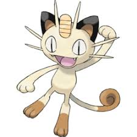
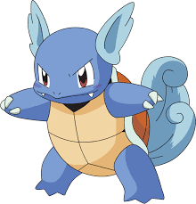

Psyduck
É um Pokémon amarelo que se assemelha a um pato ou ornitorrinco bípede.
Psyduck é constantemente atordoado por sua dor de cabeça e é incapaz de pensar com
muita clareza.

Golduck Shiny
Os Pokémon Shiny aparecem no mapa, mas o jogador só consegue identificá-lo como Shiny no momento da captura.
Esse tipo de Pokémon é raro.

Wartortle
Wartortle é um pokémon de tipo água. Pokémon tipo água são fortes contra pokémon do tipo Fogo, Terra, Pedra mas
eles são fracos contra pokémon do tipo Água, Grama, Dragão, Elétrico